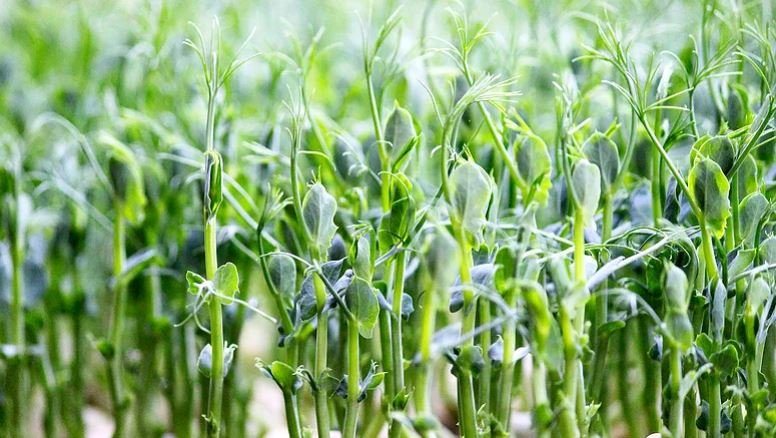

ГОРОХ
Польза микрозелени гороха заключается в том, что она насыщает организм множеством витаминов и легко усваиваемым протеином. Продукт можно использовать в качестве гарнира или как украшение блюд. Уход за культурой минимальный, она совершенно нетребовательна, вырастает за очень быстрое время.
Микрозелень гороха и ее полезные свойства неоценимы. В проросших семенах культуры содержатся практически все витамины: С, РР, группы В, А, Е, а также минеральные вещества – фосфор, марганец, железо, калий, йод, кальций, медь, магний. Продукт имеет в составе бета-каротин, фолиевую кислоту, каротиноиды. Содержит полезные ферменты, хлорофилл, антиоксиданты.
Благодаря большому количеству витаминов, польза микрозелени гороха заключается в следующем: обеспечение организма энергией; нормализация кровеносного давления; поддержание иммунитета; снижение риска сердечно-сосудистых заболеваний; участие в процессе кроветворения; предотвращение образования тромбов; оказание антибактериального и противоракового эффектов; обеспечение правильной работы всех систем организма; выведение токсинов. Кроме этого, регулярное потребление микрозелени полезно для работы пищеварительной системы, укрепляет перистальтику кишечника, предупреждает старение стенок кровеносных сосудов.